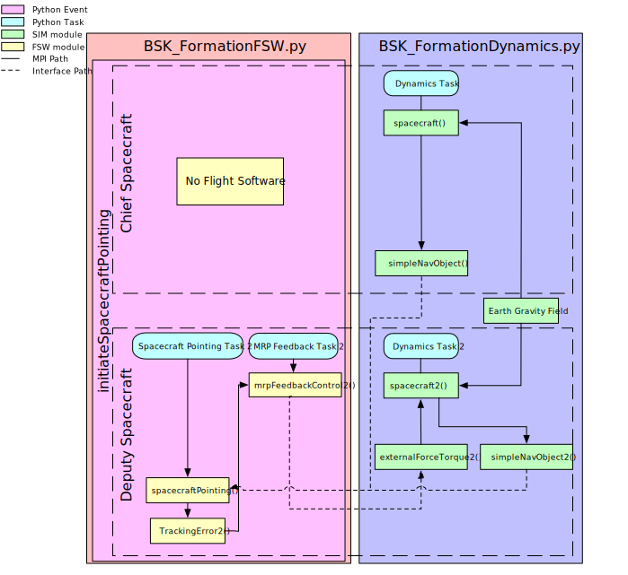
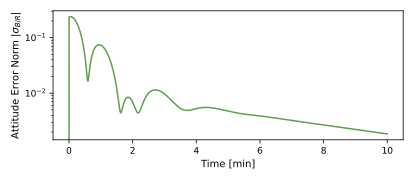
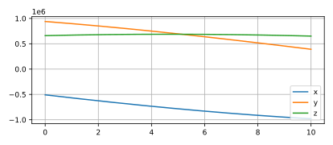
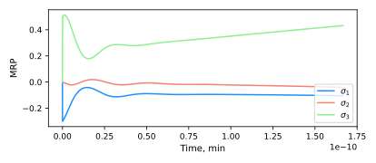
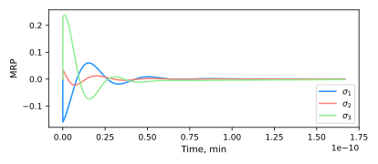

2. scenario_RelativePointingFormation
2.1. Overview
This script sets up a deputy that points to a chief spacecraft. The goal of the scenario is to
How to make sure that a deputy spacecraft is able to read data from a chief spacecraft.
How to implement a module that combines data from two spacecraft into a scenario.
The script is found in the folder basilisk/examples/BskSim/scenarios and executed by using:
python3 scenario_RelativePointingFormation.py
The simulation mimics the basic simulation in the earlier tutorial in scenario_BasicOrbitFormation.
The flight software mode is set to spacecraftPointing. The goal of this mode is to align a vector given in the deputy’s body-frame with a vector that points from the deputy to the chief spacecraft.
The simulation layout is shown in the following illustration.
In the simulation flow diagram it can be observed that the deputy spacecraft reads the data from the chief spacecraft’s
simpleNavObject. This data is consequently used to calculate the attitude of the reference frame with respect to
the inertial reference frame. Together with the attitude of the body frame of the deputy spacecraft, this data is fed
into the attitudeError module. In this module, the attitude error is calculated and fed into the MRP feedback and
torque module to make sure that the deputy’s attitude will match with the attitude of the reference frame.
2.2. Configuring the scenario file
The simulation layout is almost the same as the one used for the scenario_BasicOrbitFormation file. Two simulation processes are created: one which contains dynamics modules, and one that contains the Flight Software (FSW) modules. First of all, it can be observed that the Dynamics- and FSW files used are the BSK_FormationDynamics and BSK_FormationFsw files. These two files have been created for this specific formation flying implementation into Basilisk.
After initializing the interfaces and making sure that the scenario_BasicOrbitFormation
class inherits from the BSKSim class,
it is time to configure the initial conditions using the configure_initial_conditions method.
It can be observed that two sets of
orbital elements are created. Each set corresponding to one spacecraft. From the true anomaly of both spacecraft,
it can be deduced that this scenario makes use of a leader-follower formation. However,
the orbital elements can be changed to
whatever the user prefers. After the orbital elements are initialized the initial
conditions are set for each spacecraft.
After that the function that logs the outputs can be observed. Again this looks very similar to the log_outputs function
in the scenario_BasicOrbit file, however one discrepancy can be noticed. Looking
at the code below it can be observed that
two instances of the simpleNavObject are logged (simpleNavObject and simpleNavObject2
respectively). Each object corresponds
two one of the spacecraft. The output of the new module is also logged, as can be seen in the
before last logging statement below.
2.3. BSK_FormationDynamics file description
Looking at the BSK_FormationDynamics file, it can be observed that the dynamics process consists of two tasks named DynamicsTask
and DynamicsTask2 respectively. These tasks are added to the dynamics process and to each task, an instance of a specific object
is added.
The gravity body (Earth in this case) is created using the gravBodyFactory and is attached as a
separate object to each spacecraft as can be seen below.
After that each object is added to the corresponding task. Something that is very important is the message names. In case multiple spacecraft are implemented in Basilisk it is necessary to manually connect an output message of one module to the input of a different module. This can be seen in the module-initialization methods in the BSK_FormationDynamics.py file.
2.4. BSK_FormationFsw file description
The setup of the FSW file (BSK_FormationFsw) in case of formation flying is very similar to the setup of the dynamics file. Also in this case, an instance of each task is initialized that corresponds to one of the two spacecraft. Furthermore, it is necessary to manually set the input- and output message names for the FSW modules.
2.5. Illustration of Simulation Results
If this simulation is run for 200 minutes the following plots should be shown.
showPlots = True
This plot illustrates the illumination factor calculated by the CSS as the spacecraft orbits Earth and passes through the Earth’s shadow. 0.0 corresponds with total eclipse and 1.0 corresponds with direct sunlight.
   